談山神社・聖林寺
| 日付 | 2013年1月2日（水） |
|---|---|
| メンバー | 家族（長女・1歳、両親、姉一家） |
| アクセス | 車 |
今年の初詣は談山神社に行くことにする。
毎年1日に出かけていたが、今年は1日にいとこがやってきたため
2日にみんなで初詣に出かける。
正月は朝から酒を飲んでいるので電車移動になるが、
2日だと車で移動できるので目的地の選択の幅が広がる。
談山神社の駐車場に到着。比較的すいている。
桜や紅葉の名所なので、その時期の方が混むのかもしれない。
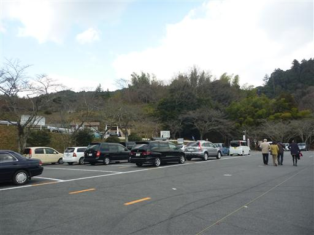
山の中にある神社のため、駐車場からは周りの山々を望むことができる。
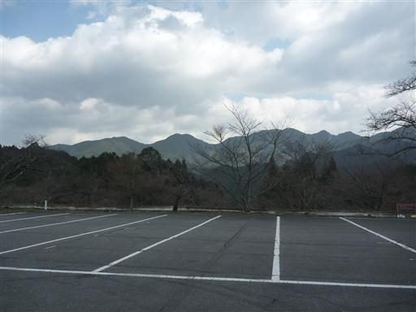
駐車場から神社まではそこそこの距離がある。
子供はあまり文句を言わず歩いてくれるので助かる。
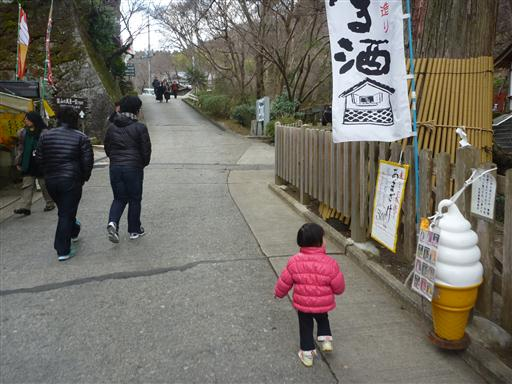
正面入口の鳥居に到着。ここから長い階段が続いている。
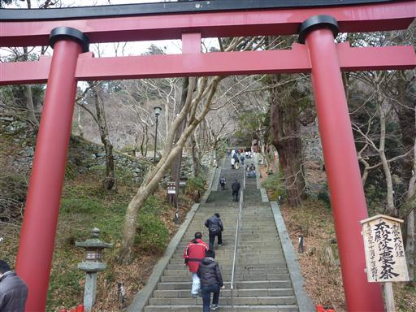
階段は大好きなので嬉々として登っている。
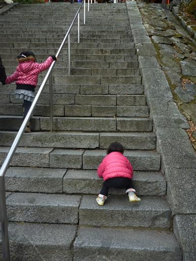
階段を登りきったところに立派な楼門が建っている。

本殿にお参りする。比較的人が少ないので楽々だ。
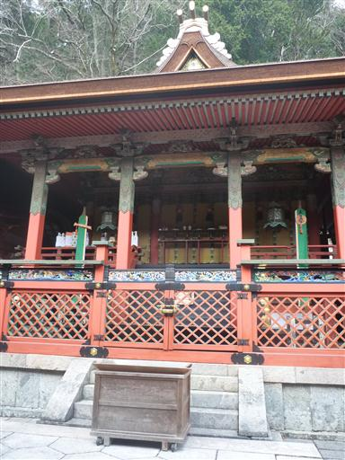
十三重塔。談山神社を代表する建築物で、
戦前に何度か日本銀行券の図案に採用されたことがあるらしい。
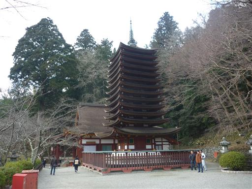
神廟拝所。
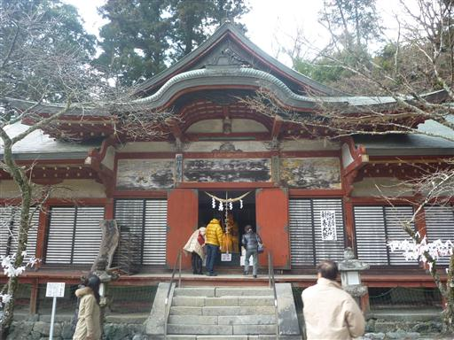
中に木彫りの福禄寿大神が祀られている。
ケヤキの木を彫ったもので、高さ3mもある大きな像だ。
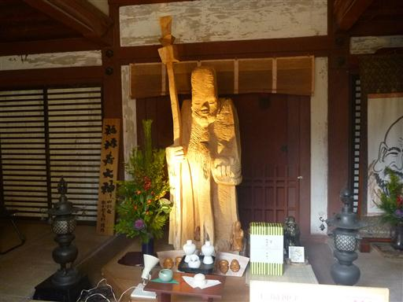
談山神社を辞し、近くにある聖林寺に寄ることにする。
国宝・十一面観音で有名な寺だ。

この寺も山の中腹にあるため眺めが良い。
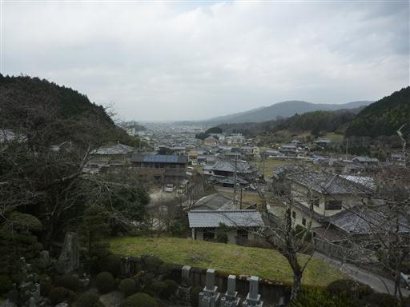
比較的小さな寺で、境内はこじんまりとしている。
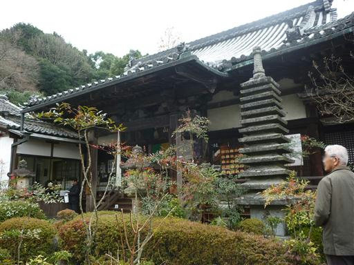
十一面観音へはコンクリートの階段を登っていく。靴を脱いでいるので足が冷たい。
観音像は撮影禁止だ。
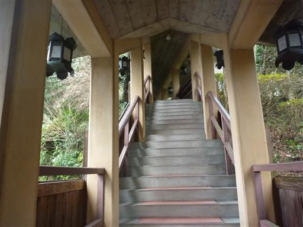
最後に皆で寺の鐘を撞く。子供は階段で遊ぶのに夢中だ。
1月にしては比較的暖かい、初詣日和の1日だった。
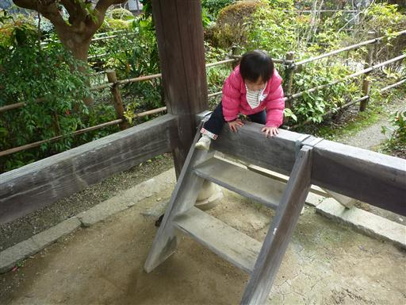